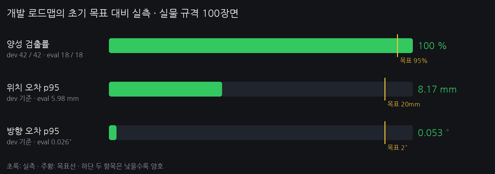

센서 측정 높이 아래에 놓인 팔레트

센서 높이 0.10 m는 원인 확인용 · 벽·장애물 측정을 위해 팔레트보다 높게 설치 · 지도 작성·로봇 위치 추정(SLAM)은 미구현
역할 구분: 2D LiDAR는 벽·장애물 거리 측정 · RGB-D 카메라는 영상·거리로 포켓 인식
지도 작성·로봇 위치 추정(SLAM) 미구현03 / 12

인식 방식: 팔레트 치수·모양으로 포켓 판별 · 실패한 단계와 원인 기록
대상 장면: 촬영 세트 s00304 / 12
적재 한도 10 kg에 맞춘 시험용 팔레트 선정

국내 유통 규격의 짧은 변 최소 740 mm · EPAL 6 자체 무게 9~10 kg · 포크 길이 420 mm
선정 결과: T11 각 치수를 0.6배로 축소 · 가로 × 세로 × 높이 660 × 660 × 90 mm 제작 예정
출처: ADR 000205 / 12


검증 범위: 컴퓨터로 만든 거리 영상 · 실제 센서·축소 T11·전체 거리 구간은 평가에 미포함
화면 생성: Gazebo Harmonic09 / 12
카메라 설치 높이에 따른 가까운 포켓의 인식 제한

설치 기준: 상단 설치 시 팔레트까지 1.75 m 이내 미검출 · 낮은 위치 우선 검토·차체 실측 후 확정
기준: 카메라에서 팔레트 전면까지의 거리10 / 12
카메라 화면에서 팔레트 앞면 이탈 시 인식 불가

관측 한계: 포크 길이 420 mm · 포켓 인식이 끊기는 거리 0.8~1.3 m · 삽입 중 위치 추적 필요
화면 생성: 측정 리그 · MuJoCo11 / 12